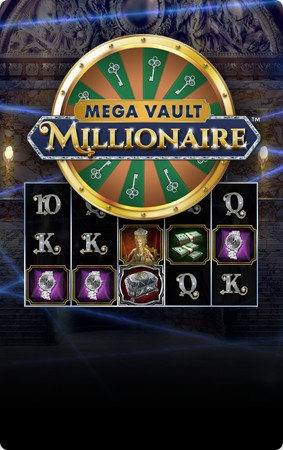
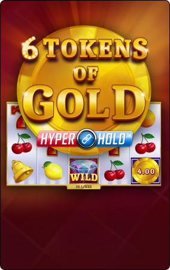
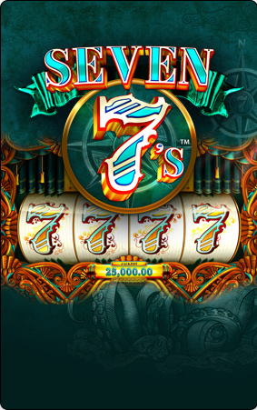

Mechanical Machines
The beginning of reel-based machines.
- Physical rotating reels
- Mechanical internal components
- Traditional fruit symbols
The beginning of reel-based machines.
New technology changed the experience.
Modern interfaces and animations.
Early slot machines were mechanical devices that used physical reels and recognizable symbols. Their simple design made them easy to identify and understand.
Fruit symbols, bells and numbers became characteristic visual elements. Over time, manufacturers developed more elaborate mechanisms and decorative designs.

Cherries, lemons and other fruits became recognizable symbols in early designs.
Rotating reels were a defining feature of traditional mechanical machines.
Bright colours and decorative details made machines visually distinctive.
Physical controls connected users with the machine's mechanisms.
During the twentieth century, electronic components gradually replaced many mechanical systems. This transition allowed designers to introduce new displays and features.
Electronic technology also changed maintenance, internal controls and the way information appeared on the machine's interface.
Screens and lights communicate information visually.

Electronic components replaced many earlier mechanical functions.
Lighting and animation became important design elements.

Clear controls help users understand the information displayed.
Modern digital machines use software, graphical interfaces and computer-generated animation. Their appearance can vary significantly between designs.
Responsive interfaces are especially important for digital content. Text, images and navigation should remain readable on different screen sizes.
Random outcomes cannot be predicted reliably from previous results. Independent random events do not become more or less likely simply because of earlier outcomes.
Good digital design uses accessible colours, understandable information and clear navigation. Interfaces should avoid misleading messages.
| Generation | Technology | Main Characteristic |
|---|---|---|
| Mechanical | Physical components | Rotating reels |
| Electronic | Electronic circuits | Digital controls |
| Modern digital | Computer software | Graphical interfaces |